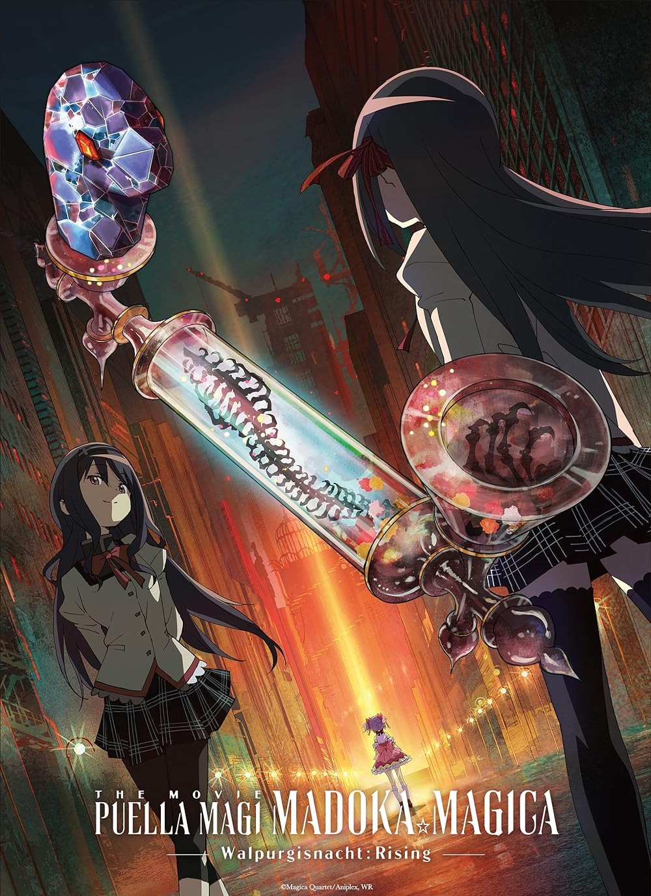
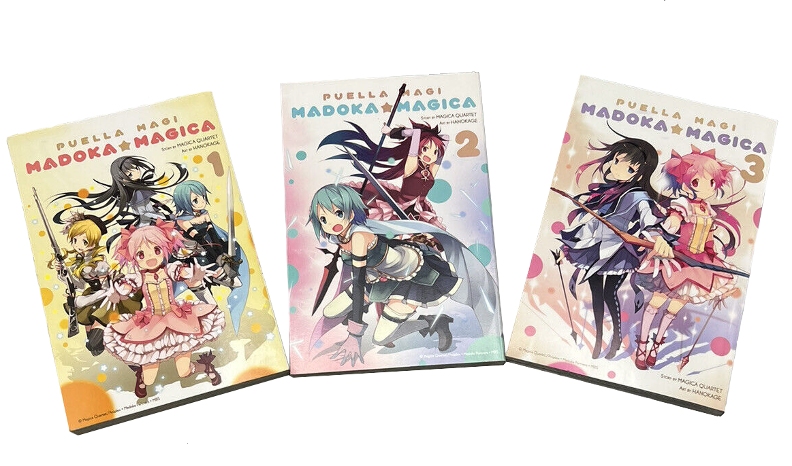
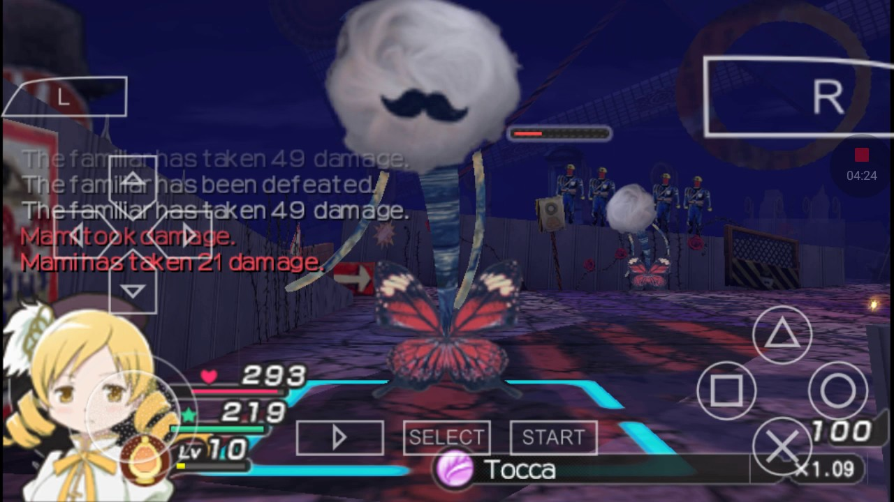

In November 2011, it was announced in the December issue of Kadokawa Shoten's Newtype magazine that Shaft was developing a three-part theatrical film project. The first two films, titled Beginnings (始まりの物語, Hajimari no Monogatari) and Eternal (永遠の物語, Eien no Monogatari), are compilations of the anime television series featuring re-recorded voices and some new animation. The first film, which covers the first eight episodes of the television series, was released in theaters on October 6, 2012, while the second film, which covers the last four episodes, was released on October 13, 2012. The first two films were screened in selected locations in the United States and seven other countries between October 2012 and February 2013; they were also screened at Anime Festival Asia between November 10 and 11, 2012, in Singapore. The two films were released on Blu-ray Disc and DVD on July 30, 2013, in standard and collector's edition sets and is being made available for import by Aniplex of America. The third film, titled Rebellion (叛逆の物語, Hangyaku no Monogatari), features a new story written by Urobuchi and acts as a sequel to the television series. It was released to Japanese theaters on October 26, 2013. The film received a North American imported release on December 3, 2013. The first and second films were re-released with an English dub on July 15, 2014.
A short concept film for a new story, described as a "movie-based image board", was debuted at Shaft's anniversary exhibition Madogatari on November 27, 2015. Shaft representative director and president Mitsutoshi Kubota later confirmed in an interview in Newtype that the concept film will launch a new Puella Magi Madoka Magica project. At the 10th anniversary event held on April 25, 2021, a sequel movie to Rebellion was announced, titled Walpurgisnacht: Rising (ワルプルギスの廻天, Warupurugisu no Kaiten). It is scheduled to be released in 2024.

print media
Houbunsha has published several manga series based on Puella Magi Madoka Magica. A direct adaptation of the anime series was illustrated by Hanokage and published in three four-chapter tankōbon volumes that were released between February 12 and May 30, 2011. The manga has been licensed in North America by Yen Press. A side story manga titled Puella Magi Kazumi Magica: The Innocent Malice (魔法少女かずみ☆マギカ〜The innocent malice〜, Mahō Shōjo Kazumi Magika: The Innocent Malice), which was written by Masaki Hiramatsu and illustrated by Takashi Tensugi, was serialized in Manga Time Kirara Forward between March 2011 and January 2013. A third manga titled Puella Magi Oriko Magica (魔法少女おりこ☆マギカ, Mahō Shōjo Oriko Magika), which was written by Kuroe Mura, was released in two tankōbon volumes on May 12, 2011, and June 12, 2011. Both Kazumi Magica and Oriko Magica have been licensed by Yen Press in North America. The first volume of Kazumi Magica was released in May 2013. Puella Magi Madoka Magica: Wraith Arc (魔法少女まどか☆マギカ［魔獣編］), which was written and illustrated by Hanokage, began serialization in the 20th issue of Manga Time Kirara Magica released on June 10, 2015. The plot describes the events that happened between Puella Magi Madoka Magica the Movie: Eternal and Puella Magi Madoka Magica the Movie: Rebellion. Yen Press will publish it in English.

The first volume of an official anthology comic featuring illustrations by guest artists was released on September 12, 2011. A dedicated monthly magazine published by Houbunsha and titled Manga Time Kirara Magica (まんがタイムきらら☆マギカ, Manga Taimu Kirara Magika) was launched on June 8, 2012; it features various manga stories, including spin-off stories of Oriko Magica. A film comic adaptation of the series titled Puella Magi Madoka Magica: Film Memories went on sale on May 26, 2012. Puella Magi Madoka Magica: The Different Story, another manga by Hanokage, was published in three tankōbon volumes between October 12 and November 12, 2012, and was licensed by Yen Press in 2014. The first volume of Puella Magi Suzune Magica (魔法少女すずね☆マギカ), which was written and illustrated by Gan, was released on November 12, 2013, before being serialized in Manga Time Kirara Magica on November 22, 2013. Puella Magi Homura Tamura (魔法少女ほむら☆たむら), which was written and illustrated by Afro, is serialized in Manga Time Kirara Magica; its first volume was released in October 2013 and was licensed by Yen Press. Puella Magi Homura's Revenge! (魔法少女まどか☆マギカ ほむらリベンジ!), written by Kawazukuu and illustrated by Masugitsune, was serialized in Manga Time Kirara Magica and released two volumes in December 2013; Yen Press licensed the manga.
Hajime Ninomae wrote a novel adaptation of the series that was illustrated by Yūpon and published by Nitroplus on August 14, 2011. Pre-release copies were available at Comiket 80 on August 12, 2011. A book titled Puella Magi Madoka Magica: The Beginning Story, which is based on Gen Urobuchi's original draft treatment for the anime, was released in November 2011.
video games

A video game based on the series titled Puella Magi Madoka Magica Portable (魔法少女まどか☆マギカ ポータブル, Mahō Shōjo Madoka Magika Pōtaburu) and designed for the PlayStation Portable was released by Namco Bandai Games on March 15, 2012. The game allows players to take many routes and change the ending of the story. Urobuchi returned as the writer and Shaft animated the title, while Yusuke Tomizawa and Yoshinao Doi produced it. The game was released in two editions; a standard box including a bonus DVD, and a limited edition box containing a Madoka Figma, a bonus Blu-ray Disc, a Kyubey pouch, a 'HomuHomu' handkerchief and a special clear card. An action game for the PlayStation Vita titled Puella Magi Madoka Magica: The Battle Pentagram (魔法少女まどかマギカ The Battle Pentagram) was developed by Artdink and published by Namco Bandai Games, and was released in Japan on December 19, 2013. The game features an original story that was created with guidance from Urobuchi in which all five magical girls team up to defeat a powerful witch called Walpurgis Night. Upon release, a limited edition version that included codes for additional in-game costumes and merchandise such as a CD copy of the game's soundtrack and an art book, was also on sale.
A free smartphone application called Mami's Heart Pounding Tiro Finale (マミのドキドキティロフィナーレ, Mami no Doki Doki Tiro Fināre) was released on October 14, 2011. A third-person shooter (TPS) titled Puella Magi Madoka Magica TPS featuring Homura Akemi was released for Android devices in December 2011. A second TPS title featuring Mami was released in August 2012 and a third featuring Sayaka and Kyoko was released on October 16, 2012. A puzzle game for iOS devices titled Puella Magi Madoka Magica Puzzle of Memories was released on March 29, 2013. Costumes from Puella Magi Madoka Magica, alongside content based on other anime and games, are available in Japan as downloadable content (DLC) for the PSP game Gods Eater Burst. Costumes and accessories are also available as DLC for Tales of Xillia 2, and were available for Phantasy Star Online 2 in October 2013. Another collaboration with the mobile game Phantom of the Kill took place for an event that ran from August 8, 2015 to September 21, 2015. During that campaign, players had a chance of obtaining playable Madoka characters through in-game lotteries. Puella Magi Madoka Magica-themed missions, weapons and items were also available at that time.
A pachinko game titled Slot Puella Magi Madoka Magica was released in 2013, and a second pachinko game titled Slot Puella Magi Madoka Magica 2 was released in 2016. Slot Puella Magi Madoka Magica 2 features the song "Naturally" by Aoi Yūki and Eri Kitamura. Also in 2016, the smartphone game Girl Friend Beta announced a collaboration with Puella Magi Madoka Magica in which players got a Madoka card as a log-in bonus. A smartphone game called Magia Record: Puella Magi Madoka Magica Side Story, was released in Japan on August 22, 2017. The game features a new protagonist named Iroha Tamaki, who arrives in Kamihama City to search for her missing sister. The game features the theme song "Kakawari" (かかわり, "Connection") by TrySail. An anime adaptation of the game premiered on January 4, 2020.